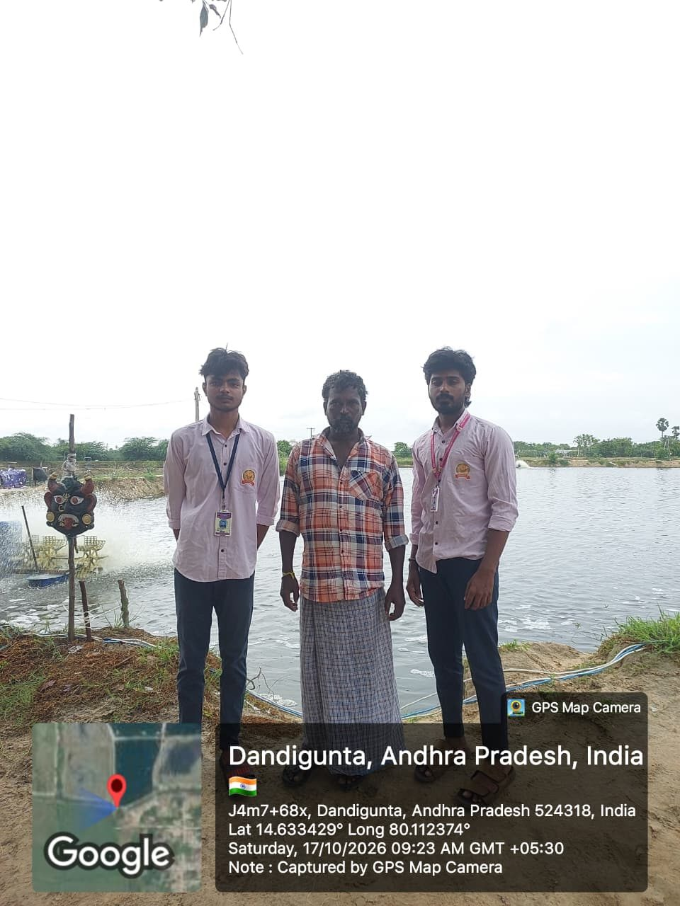
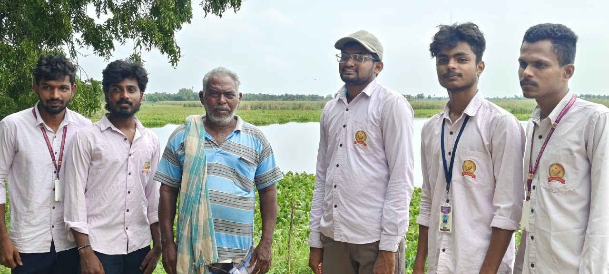
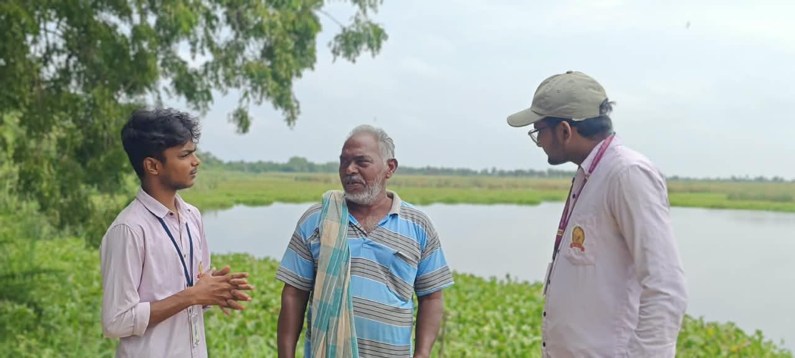
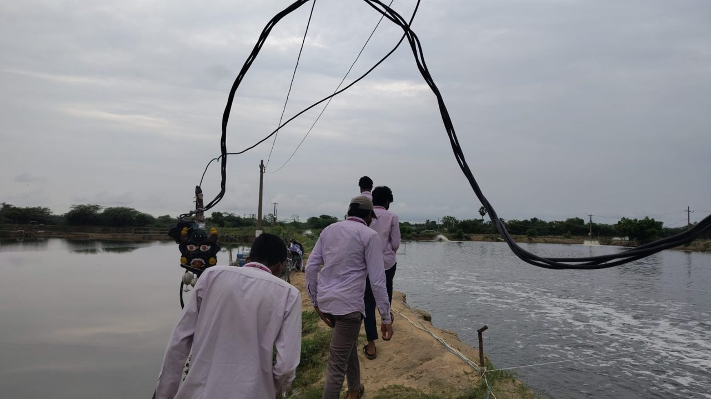
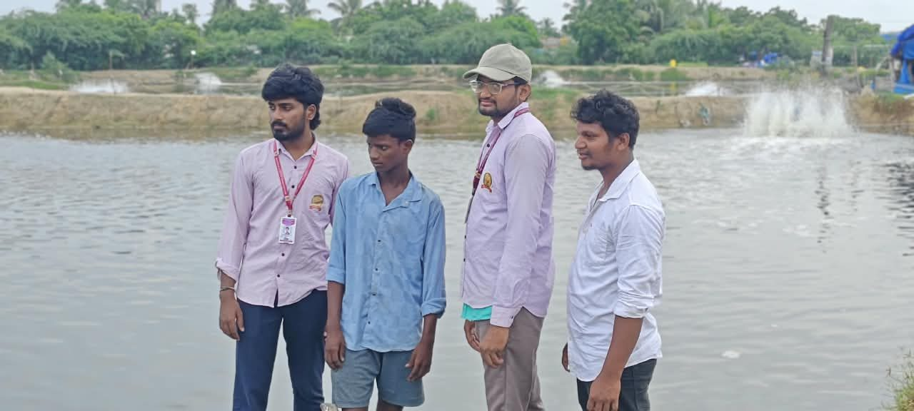
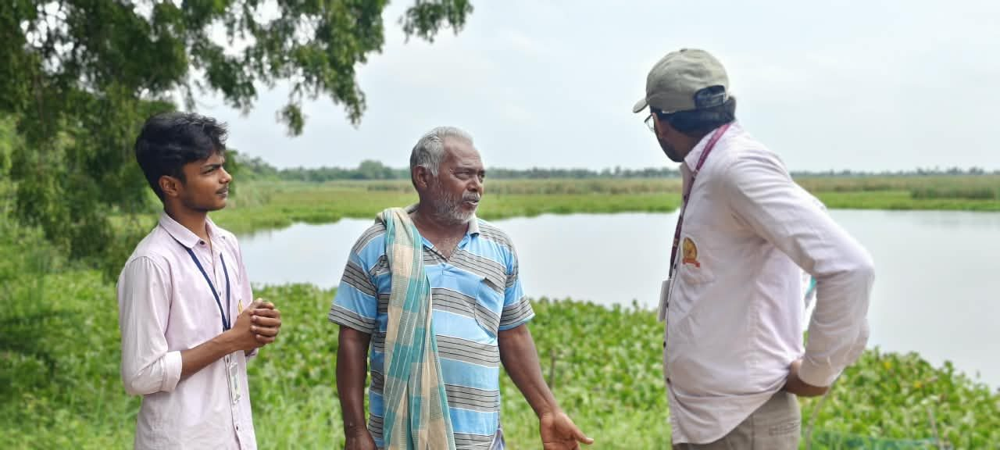
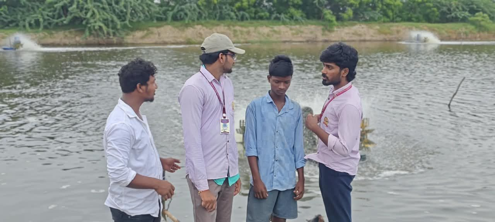

Study area and method

Dandigunta is a village in Nellore District on the Andhra Pradesh coast. The group visited ponds in the village, observed how they are managed, and interviewed farmers about stocking, feed, disease and selling price.
Readings and notes from the visit can be entered in the pond records below and exported as CSV.

Aquaculture practices
The usual cycle on a farm, from empty pond to harvest. Select a stage to read what is done and why.
Common problems and solutions

| Problem | What farmers see | Solution |
|---|
Content is a general study summary. Confirm village-level details with farmer interviews and local fisheries officers before submitting.
Pond observation records
Enter readings from the field. Records stay in this browser and can be exported as a CSV file. Values outside the indicative range for farmed shrimp are marked.
| Date | Pond | Species | DOC | pH | DO | Temp | Sal. | NH₃ | Feed | Mort. | Remarks |
|---|
No records yet. Save your first observation above.
Field visit photos
Photographs from the team's visit to Dandigunta. Select a photo to open it full size.











About this project
This website supports the group project report A Study of Aquaculture Practices, Problems and Solutions, prepared by Dhornagambala Dhanush (25JNA33502), Putta Madhan Mohan (24JNA33142), Purini Chakri (24JNA33141), Ravilla Vishnu Vardhan (24JNA33145), Parisigani Harsha Vadhan (24JNA33125), CSE AIML, under the guidance of Ms. Sowjanya. Study area: Dandigunta Village, Nellore District, Andhra Pradesh.